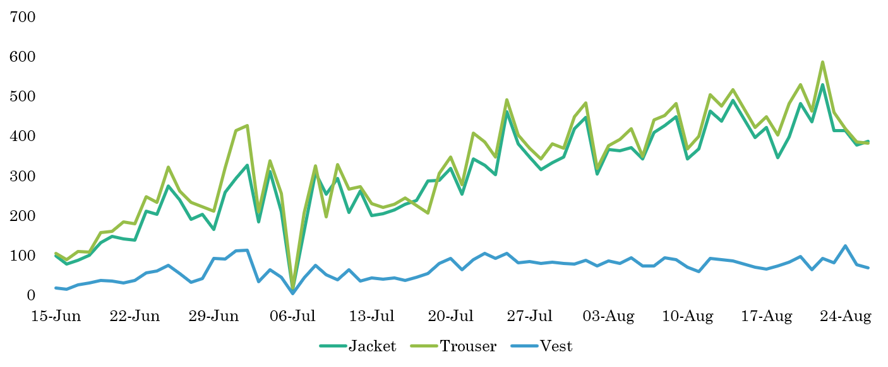
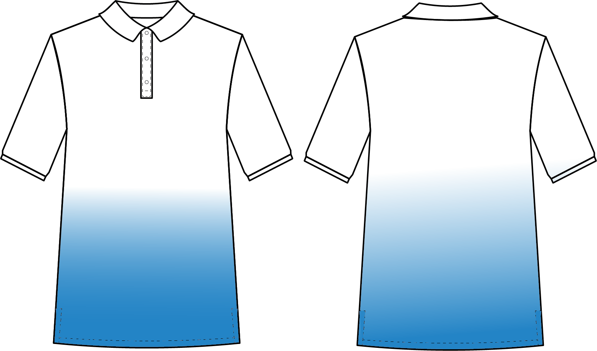

Improving Productivity of Cutting Department
Introduction
The project was implemented in a mass customization unit of Joseph Abboud. and Charles Tyrwhitt.
The CAD department at the production unit downloads a tracksheet which contains the measurements and style details of each order. After generating the marker, these sheets are sent to the substore.
The operators at the substore cut the required amount of fabric as mentioned on the tracksheet and add the fabric into a basket that is passed on to the cutting section.
The cutting machine operators open the marker by scanning the tracksheet, cut the fabric and bundle the pieces which are then passed to the fusing machnine where the shell fabric is fused.
Then the bundle is sent to the ready cutting table for cutting the block cut parts of garments with checked shell fabric. The pattern is obtained from the pattern table and then the operator matches the checks and cuts the parts.
Next, pocketing fabric, chest canvas, sleeve heads and shoulder pads are added to the bundles and passed on to quality check. The quality checker scans the tracksheet to open the marker which is projected on their tables. They check the face side, fabric code, checks matching and measurements and style by superimposing the panels with the projection.
In case a defect is found the bundle is sent for recutting or else the bundle is loaded into the sewing line.
Need for the Project
The factory recieved 700 orders per day, however, there was a bottleneck in the cutting department whose output was stagnent at around 400 purchase orders per day. This created a backlog and resulted in delay while shipping orders.
Objectives
Increase output of cutting department
Reduce idle time of cutting machine
Reduce recutting
Increase order traceability
Real Time Production Monitoring System
Problem
Workstations were present after every section to scan orders in order to update their location, however, manually scanning every bundle not only required manpower but was also subject to errors. As a result, bundles would get misplaced and in order to ship orders on time they would be re-processed.
Solution
Tracking sheets of individual garment would be scanned at the cutting machines and numerous quality checkpoints in order to open the marker. To improve the traceability of purchase orders, this prior process of scanning tracking sheets at various locations was integrated with the order tracking system.
First, a python application was created and installed on every cutting machine and quality checking table. This application would detect every purchase order number inputted on the computer in order to open the marker (no additional scanning was required) and update the order’s location along with the time and date into an excel file on the centralized network. In this way, real time production reports were produced.
Second, an interface was developed through which the user could enter the purchase order number of the garment which had to be located and the program would output the latest location of the order, that is, the workstation where the tracking sheet was last scanned. The supervisors were trained on how to use the program.
Sub-Store
Problem
a. The sub store was not able to provide cutters with the required feed and this resulted in the cutters being idle.
b. Cutting machine operators had to get fusing from the sub-store which involved unnecessary movement
Solution
a. Previously both the shell fabric and lining fabric were cut and kept in trays to feed to the cutting department. To ensure continuous feed, the shell fabric was fed to the cutting department in roll form itself when more than 10 purchase orders had the same shell fabric.
b. Previously, operators would cut the knee lining fabric from the fabric roll. Instead, knee lining fabric was cut in bulk; operators would only have to pick and put the pre-cut fabric in the tray.
c. Fusing was added to the tray provided from the sub-store.
d. Formerly, operators had to match the code written on each fabric roll with the fabric code on the tracksheet. Later, each fabric roll was given an alphanumeric code and this code was written on board which allowed the operators to identify required rolls faster.
Problem
Several discrepancies were found in the previous size chart. Measuring fabric manually using measuring tape for every order was time consuming.
Solution
A laser light, round knife cutting machine and a table were installed in front of the carousel machine. When the consumption was entered in a touch screen monitor the laser light would move the required distance, the operator would pull the fabric till the laser light and cut the fabric using the round knife cutting machine placed at the end of the table.
Cutting Section
Work Sampling
Reasons behind the low output of the cutting machines was found to be the time required to match checks while laying and frequent knife breaks on Ruizhou cutting machine.

Problem
a. Checks matching process included a step where a projected grid (neon green) was resized using the arrows keys in order to match the checks on the fabric. This process took about one minute per garment.
b. Checked fabrics were being cut only on Ruizhou (auto nester) & Gerber Cutting machines (full width). Sometimes the orders or feed of solid fabric would be exhausted and the three Ruk cutting machines would remain idle and Ruizhou and Gerber cutters would excessive WIP.
Solution
A swatch file of all the available checks fabrics with each checks fabric’s x and y repeat size was created.
a. Cutting machine operators could match the projected grid with checks of the fabric by directly entering the repeat size in the software.
b. With the details of repeat size of every fabric, the CAD department could make manual markers to cut checks fabric on Ruk Cutting Machine.
Problem
The Ruizhou machine is used to cut garments with checked shell fabric. The fabric is laid on fold. In order to match the checks and prevent the layers from moving, the operators would staple the fabric onto the bed. Later, these pins would break the knife and cause rash cutting. 4 blades costing Rs.750 each were damaged each day Each blade change required 20 minutes. Each knife break was a potential hazard
Solution
The magnetic property of the pins was used in order to remove all the pins from the bed before laying the next fabric. A powerful magnet provided to the machine operators who were trained to pick up all the pins from the bed using the magnet by just moving it across the bed once.


Problem
The process of cutting collar and collar stand of checks garments manually was a very tedious process, the paper pattern had to be procured and cut using the rotary knife.
Solution
The collar and collar stand were cut on the cutting machine by aligning the checks with the projection of patterns on the machine bed. This increased the output from 10 pieces per hour to 40 pieces per hour and reduced the man power requirement.
Fusing Section
Problem
• Crowded workspace • Parts Missing • Low output • No Standard Operating Procedure
Solution
To solve this problem, a rack and conveyor set up was added in front of the fusing machine.
• Conveyor: A longer conveyor was added in front of the fusing machine, so that operators could directly put the pieces onto the conveyor once the fusing and shell set up was ready.
• Panel over the conveyor: Panels were made of acrylic sheets to keep on top of the conveyor between railings. This increased the workspace for the operators.
• Angled rack: Two racks were placed back to back at a 120 angle. These racks were divided into 3 color coded columns and 4 rows. Each column was assigned to one operator.
• Job Reengineering: Each operator was assigned to work on specific panels. As they worked on the same panels repeatedly, their efficiency increased.

Bundling Section
Problem
Track sheets were cut into 5 parts, namely, lining section, sleeve section, front section, collar section and back section using a rotary knife. This paper was then tagged with the respective part using a tagging machine. This time-consuming process created a bottle neck in the bundling section.
Solution
The tagging process was eliminated by a stickering process. Stickers were printed from the CAD department and provided to the cutting machine operators along the tracksheet who could attach the stickers while picking the part from the machine bed.

Recutting
Problem
Numerous panels had to be recut due to fusing defects.
Solution
A board consisting of various fusible parts of a jacket and the placement of the fusing along with its type was displayed above every fusing machine. The display board was used to train new recruits and provided a reference to the operators.
Problem
The knee lining fabric is given a finishing along the selvedge to prevent unravelling. To keep this finish intact, the bottom of the knee lining is not cut, the fabric is laid such that the fabric remains above the line to be cut.
Sometimes the operators would negligently spread the knee lining such that the lower line of the knee lining would be cut on the fabric. This would result in the bottom of the knee lining unraveling. As a result of this, the knee lining would have to be recut.
Solution
After a meeting with the pattern department, the bottom line was deleted from the knee lining pattern. This eliminated the knee lining bottom open problem.

Result
Reduction in Duplication
Recutting per Day
Output per Day
Manpower Requirement
BEFORE
• Tagging: 4/shift
• Ready cutting: 3/shift
• Counting: 4/shift
• Cutter: 4 operators/shift
AFTER
• The tagging process was eliminated by using stickers to label parts on the cutting machine itself.
• The ready cutting of parts was reduced to only trouser facing and parts in which there was checks mismatch. The rest of the parts were cut at the cutter.
• The counting process at the bundling table was eliminated by giving responsibility to fusing operators for counting shell fabric and cutter operators for lining fabric.
• The number of operators on each cutter was reduced to 3 operators per machine from 4.
Cost Saving
• Salary of Operators
• Salary per month = 15 operators * 7000 Rs/per month = Rs. 1,05,000/mo
• Savings per year = Rs. 12,60,000 /year
• Tagging
• Tag guns & pins = Rs. 4000/mo
• Savings per year = Rs. 48,000/year
• Cutting Machine Blade
• Cost per knife = Rs. 750
• Breakage per day = 3 times
• Cost per month = Rs. 68,000/mo
• Savings per year = Rs. 6,16,000 /year
AutoCAD
Apparel Showroom Layout
Factory Layout

Orthographic View of Sewing Machine
Orthographic View of Laptop
3D Model of a House

Technical Sketch
Joggers
Hoodie
Jeans
Blazer
Legging

Gathered T-Shirt

Skirt

Shirt
Trouser

Sweatshirt
Polo T-Shirt
Denim Jacket